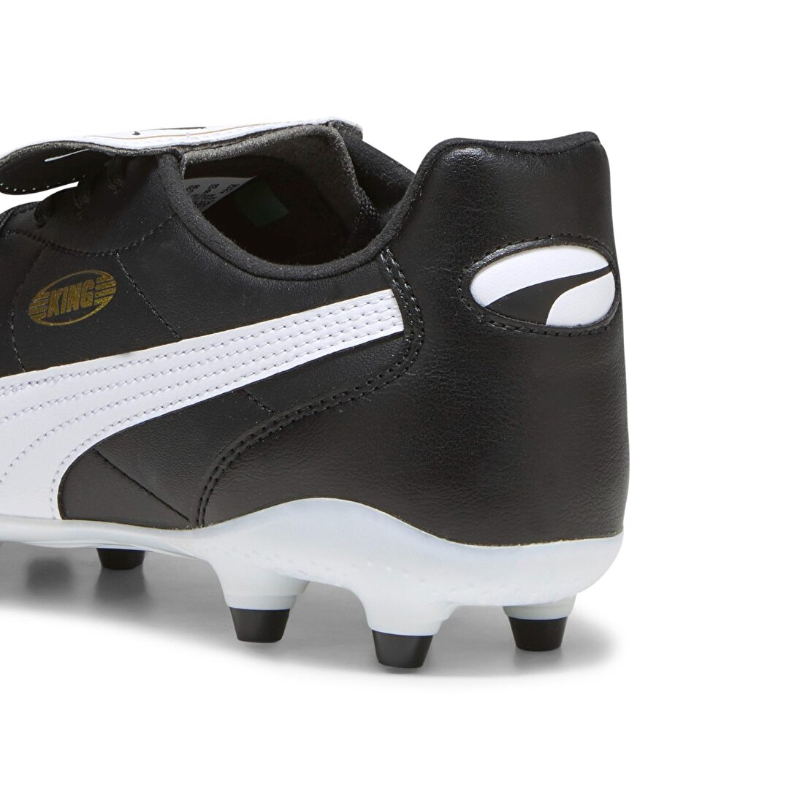
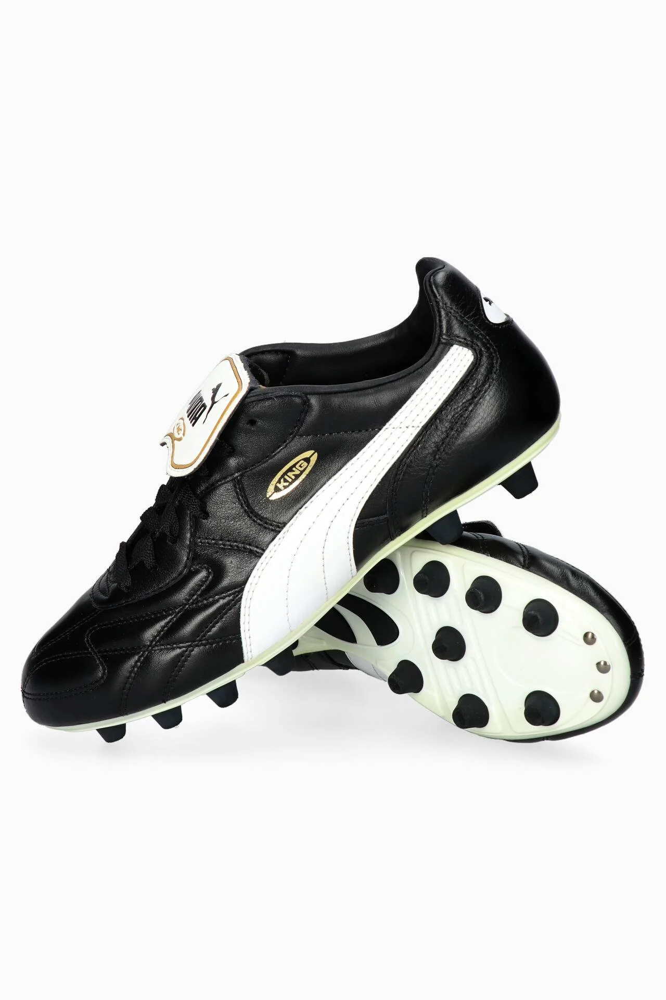

Puma King Ultimate FG/AG İncelemesi
| Üretici: | Puma |
| Krampon Türü: | FG/AG (Doğal + Suni Çim) |
| Model: | King Ultimate |
| Üst Malzeme: | K‑Better sentetik deri |
| Taban: | Hafif TPU konik çivili FG/AG plakası |
| Bağlama: | Bağcıklı |
| Renk: | ⚫⚪ |
Genel Tanıtım
Puma King Ultimate, klasik King serisinin modern bir yorumu olarak karşımıza çıkıyor. K‑Better sentetik deri üst yüzeyi, yumuşak doğal deri hissi vermeye çalışıyor. Neredeyse boğa derisi kadar ince olmamakla beraber esnek ve hızlı tepki veren bir yapı sunuyor. Yumuşak örgü dantelli dil kısmı ise ayağı hafif şekilde sarıyor ve konforu artırıyor.
Malzeme & Teknoloji
• K‑Better üst: Yumuşak sentetik deri hissiyle doğal deri konforu hedefliyor. Kutudan çıkar çıkmaz ayak anatomisine göre şekil alıyor.
• Konik FG/AG çivili taban: Hem doğal hem de yapay zeminde güvenli tutuş sağlıyor. Manevra kabiliyeti oldukça yüksek.
• Örgü yaka: Hafif sıkıştırma sağlayarak bağcıklı sisteme destek veriyor.
Performans & Sahadaki Yansıma
King Ultimate, hız ve çevikliğe odaklanan bir krampon olarak test edildiğinde; özellikle yapay çim üzerinde koni çivili taban sistemiyle çok başarılı bir kavrama sağlıyor. Dönüşlerde, süratte ve ani frenlerde kullanıcıdan tam not aldı. Ancak ıslak zeminde üst malzemede kayganlık yaşandığı da kullanıcı yorumlarında belirtilmiş.
Konfor & Uyumu
KUTUDAN ÇIKAR ÇIKMAKTA yumuşaklık hissediyorsunuz; dar kalıplı yapısı nedeniyle özellikle geniş tabanlı ayaklarda ilk birkaç kullanımda sıkılık hissi olabilir – bu durumda yarım numara büyük almak tavsiye ediliyor :contentReference[oaicite:9]{index=9}. Zamanla kol yaptığı ve ayağa oturduğu, birkaç antrenmandan sonra net şekilde hissediliyor.
Artılar & Eksiler
Artılar: Klasik görünüm, çok yönlü FG/AG kullanım, yumuşak sentetik upper, örgü dil
Eksiler: Dar kalıp, ıslakta hafif kayganlık ve deri hissiyatının tam oturmaması
Fiyat & Satın Alma Bilgisi
Türkiye’de King Ultimate modeli genellikle 6.000‑7.500 ₺ aralığında satılıyor. Bu fiyat, sunduğu performans, tasarım ve çok zeminli kullanım alternatifi düşünüldüğünde, fiyat‑performans açısından değerlendirilebilir. PUMA